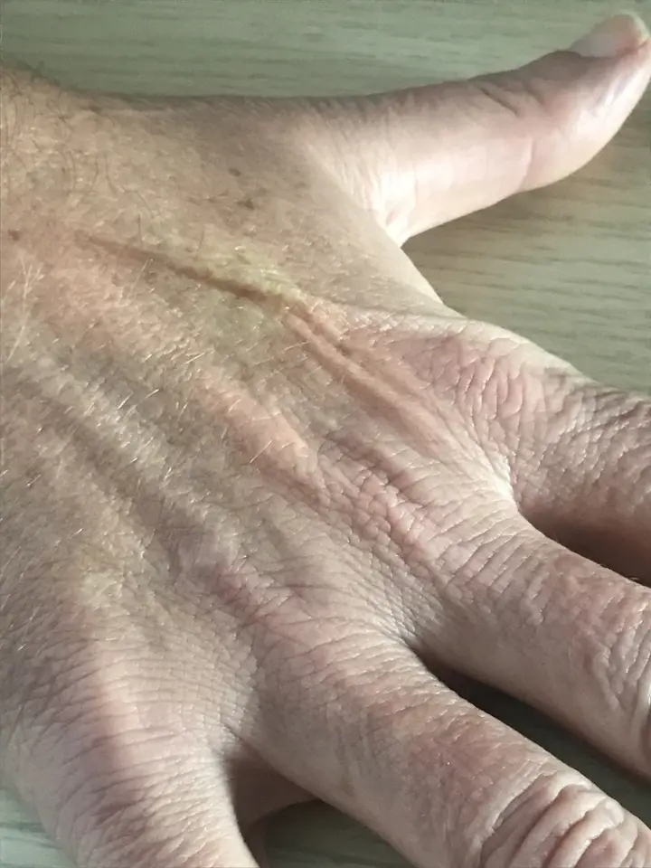
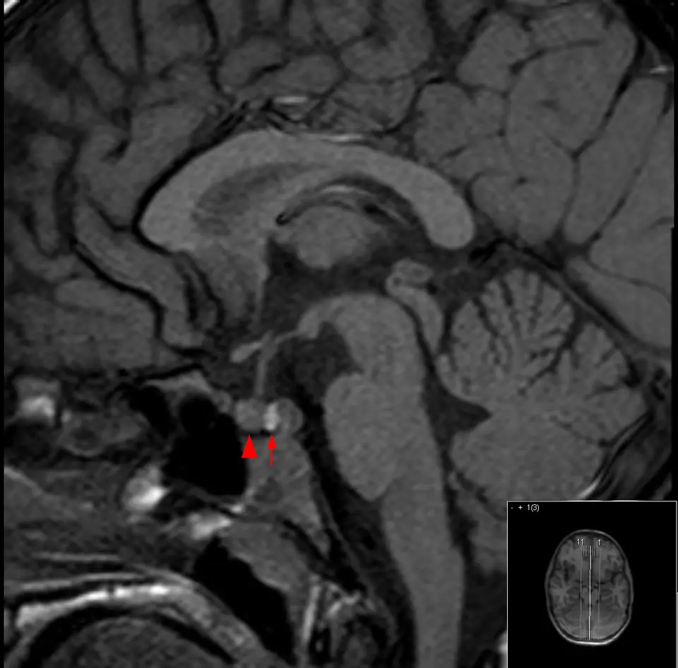

Soif excessive, consommation excessive de liquides (polydipsie)
Bloc 1 — Monographie du SSP G3 en 14 points
1. Définition et sémantique
La soif excessive (G3, PROFILES 2023) correspond à un besoin de boire accru3. La polydipsiePrise liquidienne supérieure à 3 L par jour, code R63.1 de la CIM-10 ; seuil de la revue bâloise. dépasse 3 L par jour3. La polyurieDiurèse élevée, soit plus de 3 L par jour chez un adulte de 60 kg. dépasse 40 à 50 mL/kg par 24 h3. Le syndrome polyuro-polydipsique comprend trois entités34. La première entité est le diabète insipide centralDéficit de sécrétion d'AVP par l'hypothalamus ou l'hypophyse postérieure ; l'urine reste diluée.3. La deuxième entité est le diabète insipide néphrogéniqueRésistance rénale à l'AVP, le plus souvent acquise (lithium, hypercalcémie, hypokaliémie).3. La troisième entité est la polydipsie primairePrise d'eau excessive malgré une AVP et une réponse rénale normales.4.
Où se situe le problème ? Du général au particulierSymptômes, signes et résultats anormauxCIM-10, chapitre XVIII
Symptômes et signes générauxCIM-10, R50–R69 : ce bloc regroupe la fièvre, la fatigue et les troubles de l'alimentation et de la prise de liquides3.
Symptômes et signes relatifs à la circulation et à la respirationCIM-10, R00–R09 : ce bloc regroupe les plaintes cardiaques et respiratoires3.
Symptômes et signes relatifs à l'appareil digestif et à l'abdomenCIM-10, R10–R19 : ce bloc regroupe les douleurs abdominales, nausées et vomissements3.
Symptômes et signes relatifs à la peau et aux tégumentsCIM-10, R20–R23 : ce bloc regroupe les troubles de la sensibilité cutanée et les éruptions3.
Symptômes et signes relatifs aux systèmes nerveux et ostéo-articulaireCIM-10, R25–R29 : ce bloc regroupe les mouvements anormaux et les troubles moteurs3.
Symptômes et signes relatifs à l'appareil urinaireCIM-10, R30–R39 : ce bloc regroupe la dysurie, la rétention et la polyurie3.
Symptômes et signes relatifs à la connaissance, à la perception, à l'humeur et au comportementCIM-10, R40–R46 : ce bloc regroupe les troubles de la conscience et du comportement3.
Symptômes et signes relatifs à la parole et à la voixCIM-10, R47–R49 : ce bloc regroupe les troubles du langage et de la phonation3.
Résultats anormaux d'examensCIM-10, R70–R94 : ce bloc regroupe les anomalies biologiques et d'imagerie sans diagnostic3.
Causes de mortalité mal définies et inconnuesCIM-10, R95–R99 : ce bloc regroupe les décès dont la cause reste imprécise3.
Symptômes et signes générauxCIM-10, R50 –R69
PolydipsieCIM-10, R63.1 : la prise liquidienne dépasse 3 L par jour3.
AnorexieCIM-10, R63.0 : la perte d'appétit diminue les apports alimentaires3.
PolyphagieCIM-10, R63.2 : l'appétit excessif augmente les apports alimentaires3.
Difficultés et mauvaises conduites alimentairesCIM-10, R63.3 : les habitudes alimentaires inadaptées perturbent la nutrition3.
Perte de poids anormaleCIM-10, R63.4 : le poids diminue sans cause volontaire3.
Prise de poids anormaleCIM-10, R63.5 : le poids augmente sans cause volontaire3.
Autres symptômes relatifs à l'alimentation et à la prise de liquidesCIM-10, R63.8 : cette rubrique rassemble les autres plaintes de ce groupe3.
PolydipsieCIM-10, R63 .1
G1 Transpiration anormalePROFILES 2023 : la sueur est trop abondante ou trop rare3.
G2 Tuméfaction, tumeur, adénopathiePROFILES 2023 : une masse ou un ganglion augmente de volume3.
G3 Soif excessive, consommation excessive de liquidesPROFILES 2023 : le patient boit plus que son besoin, situation étudiée dans ce cours3.
G4 Fatigue, lassitudePROFILES 2023 : le patient ressent un manque d'énergie persistant3.
G5 Sensation de maladiePROFILES 2023 : le patient se sent malade sans plainte précise3.
G6 Fièvre, frissons, hyperthermiePROFILES 2023 : la température corporelle s'élève3.
G7 Bouffées vasomotrices (flush)PROFILES 2023 : une chaleur et une rougeur surviennent par accès3.
G8 HypothermiePROFILES 2023 : la température corporelle baisse3.
G9 PruritPROFILES 2023 : une démangeaison pousse à se gratter3.
G10 Douleurs de tous typesPROFILES 2023 : la douleur est au premier plan3.
G11 Troubles du sommeilPROFILES 2023 : l'endormissement ou la qualité du sommeil se dégrade3.
G3 Soif excessive, consommation excessive de liquidesPROFILES 2023
Polyurie hypotonique
Diurèse osmotique
Déshydratation
Hypercalcémie
Xérostomie
À ne pas confondre : xérostomieBouche sèche : le patient boit par petites gorgées pour humidifier, sans polyurie. Évoquer le syndrome de Sjögren ou les anticholinergiques., pollakiurieMictions fréquentes de petit volume. Le volume urinaire total reste normal. L'infection, la prostate et la vessie hyperactive la causent., nycturieRéveil nocturne pour uriner. Elle accompagne le diabète insipide ; la polydipsie primaire la nie souvent., soif adaptéeRéponse physiologique à une déshydratation ou à une hyperosmolalité. Elle cesse après correction du déficit hydrique.. Seule la glycémie sépare le diabète insipide du diabète sucré.
2. Épidémiologie (Suisse, puis Europe)
La fréquence d'une maladie n'est pas sa probabilité chez un patient assoiffé. Les chiffres suisses disponibles portent sur le diabète sucré, l'insuffisance rénale et les causes isolées, puis les chiffres européens et internationaux complètent le tableau. Le diabète sucré touche 6,2 % des Suisses de 15 ans et plus (2022)7. L'âge fait croître le diabète (surtout chez l'homme) et l'insuffisance rénale. Le sexe féminin est majoritaire dans l'hyperparathyroïdie9. Les groupes à risque sont les patients sous lithium, les patients psychiatriques et les personnes âgées. Les enjeux sont la gravité, le coût et le diagnostic. Une restriction hydrique appliquée à tous les polyuriques expose à des complications graves quand la cause est un diabète insipide6. Après une acidocétose, la mortalité à un an est 13 fois celle de la population générale11. L'hypercalcémie échappe au diagnostic : 38 % des sorties ne la mentionnent pas19. Le dépistage du diabète repose sur la glycémie ou l'HbA1c13.
Fréquence des causes du SSP : chiffres suisses d'abord, puis européens et internationaux.
Entité
Fréquence ou mesure portée (%, pour 10 000 ou effectif)
Population, pays, année
Donnée associée (%, € ou pour 10 000, selon la ligne)
Diabète sucré
6,2 % (4,8 % en 2017) ; hommes 6,9 %, femmes 5,6 %761913
Suisse, ≥ 15 ans, diabète déclaré ou traité, 20227
Un cinquième sous insuline ; 12,7 % sans formation postobligatoire7
3.1 Amorce, développement, installation et maintien
Osmolalité plasmatiqueConcentration des solutés par kg d'eau plasmatique ; norme 275 à 295 mOsm/kg. et volémie règlent la soif et l'AVP3. Une hausse d'osmolalité active les osmorécepteurs de l'hypothalamus. Ils déclenchent la soif et la libération d'AVP. L'AVP se fixe sur les récepteurs V2 du tubule collecteur. Elle insère les canaux AQP2 et fait réabsorber l'eau. L'hypovolémie est le stimulus non osmotique principal3,4.
Amorce : trois mécanismes déclenchent le SSP. Un défaut d'AVP ou de réponse rénale fait perdre de l'eau libre. Une prise d'eau excessive sature l'excrétion. Un soluté retient l'eau dans l'urine : le glucose domine, le calcium aussi3,11.
Développement : à l'échelle moléculaire, la cause est le défaut d'AVP ou de canaux AQP2. À l'échelle cellulaire, les cellules principales du tubule perdent leur perméabilité à l'eau. À l'échelle tissulaire, l'urine reste diluée. La perte d'eau augmente alors l'osmolalité et la soif. Le patient boit et compense, donc la natrémie reste normale tant que l'accès à l'eau est libre. Le diabète insipide ne provoque une hypernatrémie qu'en cas d'adipsie ou d'inaccessibilité de l'eau3.
Installation : dans la polydipsie primaire chronique, la diurèse hydrique prolongée efface le gradient médullaire. L'AVP, freinée, réduit les canaux AQP2. Le tableau peut alors imiter un diabète insipide et fausser les tests d'urine. Dans le diabète, l'hyperglycémie dépasse le seuil rénal et entraîne une diurèse osmotique. Dans le SHHHyperglycémie ≥ 33,3 mmol/L avec hyperosmolalité, sans cétose ni acidose majeures ; déshydratation profonde., l'insuline suffit à bloquer la cétogenèse, pas l'hyperglycémie3. Dans l'acidocétose, le déficit en insuline sévère libère des acides gras et forme des cétones3,11.
Maintien : l'hypercalcémie peut rendre le tubule résistant à l'AVP et déshydrater le patient. Le lithium fait de même en pénétrant dans les cellules principales. La xérostomie maintient un besoin de boire sans polyurie3,14.
Complications : la polydipsie primaire expose à l'hyponatrémie quand l'apport dépasse l'excrétion. Un rein normal peut excréter jusqu'à 15 à 18 L par jour4. Cette capacité tombe à 4 L par jour quand l'apport de solutés baisse (malnutrition, bière)4. Médicaments, infection et stress libèrent l'AVP et aggravent le risque. Une correction de la natrémie supérieure à 12 mmol/L en 24 heures peut entraîner une myélinolyse4.
Corrélation : chaque perturbation, l'exploration qui la montre, le traitement qui la corrige et son mécanisme.
Lésion ou perturbation
Exploration qui la montre
Thérapeutique qui la corrige (mécanisme)
Carence en AVP (diabète insipide central)
Copeptine stimulée basse ; IRM hypophysaire
Desmopressine : elle remplace l'AVP et active le récepteur V2
Résistance rénale à l'AVP (diabète insipide néphrogénique)
Xérostomie (syndrome de Sjögren, anticholinergiques)
Test de Schirmer ; débit salivaire ; anti-SSA
Pilocarpine : elle stimule les récepteurs muscariniques des glandes ; arrêt du médicament
Lésion hypothalamo-hypophysaire
IRM ; champ visuel ; bilan hypophysaire
Traitement de la lésion ; desmopressine ; apports programmés si adipsie
4. Démarche diagnostique
À l'étape 1, on écarte les drapeaux rouges, dans l'ordre E1 → E5 du délai avant dommage irréversible, après l'urgence hors liste. Le patient assoiffé et instable reçoit d'abord glycémie, natrémie, calcémie et gaz du sang. À l'étape 2, sans urgence, on chiffre la polyurie (diurèse de 24 h) et la polydipsie, puis on recherche un soluté3. La glycémie, l'HbA1c, le calcium et la créatinine éliminent les causes osmotiques et rénales. À l'étape 3, on mesure l'osmolalité urinaire. Une urine diluée oriente vers le diabète insipide ou la polydipsie primaire ; la copeptine tranche (points 8 et 9)3,11.
Chaque drapeau rouge porte son signe qui tranche, son piège et sa conduite immédiate.
Rang et danger (pourquoi rouge)
Signe ou examen qui tranche
Piège classique
Conduite immédiate
🚩 hors liste · Hyponatrémie symptomatiqueRouge : l'eau entre dans les neurones ; œdème cérébral et convulsions. Complication de la polydipsie primaire.
Natrémie immédiate chez un buveur confus ou convulsif
Donner de la desmopressine ou de l'eau aggrave l'hyponatrémie
Restreindre l'eau ; chlorure de sodium 3 % si symptômes graves ; éviter une hausse > 12 mmol/L en 24 h3
🚩 E1 · Acidocétose diabétiqueRouge : acidose, déshydratation et hypokaliémie en quelques heures ; arrêt cardiaque possible. (DX.9)3
Glycémie ≥ 11,1 mmol/L ou diabète connu ; cétonémie ≥ 3,0 mmol/L ; pH < 7,30 ou bicarbonate < 18 mmol/L11
Glycémie parfois normale (≈ 10 % : jeûne, grossesse, inhibiteurs du SGLT2)11
Perfusion, potassium, insuline IV ; surveillance horaire (point 11)
Le signe du point brillant manque chez 39 % des polydipsiques primaires3
IRM ; bilan hypophysaire ; avis endocrinologique et neurochirurgical
5. Anamnèse ciblée et drapeaux rouges
Chaque question suit une raison physiopathologique. La chronologie, les déclencheurs, les comorbidités, les médicaments et l'alcool sont recherchés. Le contexte suisse compte : le lithium, les soins aux personnes âgéesLes personnes âgées ont une soif atténuée ; elles se déshydratent plus vite en cas de chaleur.. La prise d'eau est recommandée par les programmes de santé4.
Questions clés : la raison physiopathologique change la décision.
Question à poser
Raison physiopathologique
Ce qu'elle change
Le début est-il brutal ou progressif ?
Le déficit en AVP s'installe vite (chirurgie, traumatisme) ; la polydipsie primaireExcès de prise d'eau sans défaut d'AVP. s'installe progressivement
Le patient se réveille-t-il pour boire et uriner ?
Le diabète insipide et l'hyperglycémie persistent la nuit ; le polydipsique primaire dort souvent
Nycturie : écarter diabète et diabète insipide
Quel volume boit-il, et quel liquide ?
Plus de 3 L par jour définit la polydipsie ; la bière et les boissons sucrées ajoutent solutés ou glucose4
Quantifier ; bière : risque d'hyponatrémie
A-t-il perdu du poids, urine-t-il beaucoup, a-t-il faim ?
L'insuline manquante provoque catabolisme et glycosurie
Glycémie capillaire immédiate
Quels médicaments prend-il ?
Le lithium rend le tubule résistant à l'AVP ; les thiazides et les antidépresseurs retiennent l'eau ; les anticholinergiques assèchent la bouche4
Lithiémie ; arrêt ou substitution avec le prescripteur
Y a-t-il une maladie psychiatrique ou une consommation d'alcool ?
La schizophrénie, l'anxiété et la dépendance accompagnent la polydipsie primaire
Polydipsie primaire plus probable ; natrémie
A-t-il eu une chirurgie, un traumatisme ou une irradiation du crâne ?
La neurohypophyse est détruite ou comprimée
Diabète insipide central : IRM, copeptine
Y a-t-il des céphalées ou des troubles visuels ?
Une masse sellaire ou hypothalamique comprime le chiasma optiqueCroisement des nerfs optiques, au-dessus de l'hypophyse ; sa compression restreint le champ visuel.
IRM urgente
Y a-t-il des douleurs osseuses, des calculs, une constipation, des nausées ?
L'hypercalcémieCalcémie corrigée supérieure à la norme de 2,15 à 2,55 mmol/L. agit sur l'os, le rein et le tube digestif14
Calcémie corrigée et PTH
La bouche et les yeux sont-ils secs ? Y a-t-il des douleurs articulaires ?
Les glandes exocrines sont infiltrées par des lymphocytes
Syndrome de Sjögren : Schirmer, anti-SSA
Y a-t-il eu fièvre, diarrhée ou exposition à la chaleur ?
Les pertes hydriques augmentent l'osmolalité et la soif
Hypovolémie : examen, ionogramme
Un proche a-t-il la même polyurie ?
Les mutations d'AVPR2, d'AQP2 ou du gène AVP sont héréditaires
Forme héréditaire ; bilan génétique spécialisé
Drapeaux rouges : ce qu'ils imposent tout de suite.
Une confusion, une somnolence, des vomissements, une respiration profonde ou une haleine fruitée imposent une glycémie capillaire et des cétones, puis les urgences (E1, E2).
Une hypotension, une tachycardie, une oligurie ou une peau froide imposent un accès veineux, un remplissage et un ionogramme (E3).
Des céphalées avec troubles visuels imposent une IRM urgente et un avis spécialisé (E5).
Une convulsion ou une confusion chez un grand buveur d'eau impose une natrémie immédiate (hors liste).
Des douleurs osseuses, une tumeur connue ou une perte de poids avec soif imposent une calcémie corrigée le jour même (E4).
Après une chirurgie hypophysaire récente, la natrémie et la diurèse se mesurent au moins chaque jour3.
6. Examen physique ciblé, région par région
L'examen suit une progression topographique. Pour chaque région, le normal précède le pathologique. Le patient se déshabille et se couche ; l'examinateur compare chaque signe à la norme.
Région 1 — État général et signes vitaux. Chez le sujet normal, la conscience reste claire, la tension se maintient4. Le pouls bat entre 60 et 100 par minute et la respiration reste calme4. On cherche une hypotension orthostatiqueOn mesure la tension couchée après 5 minutes, puis debout à 1 et 3 minutes4. Une chute systolique de 20 mmHg ou diastolique de 10 mmHg fixe le seuil4. Le signe détecte bien l'hypovolémie. Les bêtabloquants et la neuropathie diabétique le faussent., une tachycardieOn prend le pouls radial pendant 30 secondes4. Le seuil est de 100 par minute4. Le signe est sensible mais peu spécifique. La fièvre, l'anxiété et l'hyperthyroïdie l'expliquent aussi., une respiration de KussmaulOn observe la respiration au repos. Le patient inspire amplement, profondément et régulièrement. Le signe révèle une acidose métabolique, donc une acidocétose. L'anxiété donne plutôt une hyperventilation superficielle. et une haleine acétonéeOn sent l'air expiré. Il dégage une odeur fruitée quand les cétones sont élevées. Tous les examinateurs ne la perçoivent pas.. La peséeOn utilise une balance étalonnée, le matin, après la miction. Elle fixe le poids de référence. Un gain rapide trahit une rétention d'eau, une perte rapide une déshydratation. Les vêtements et les repas la faussent. complète ce premier temps4,11.
Région 2 — Tête et cou. Normalement, les muqueuses buccales restent humides, une flaque de salive couvre le plancher buccal et les globes oculaires ne s'enfoncent pas20. On repère des muqueuses sèchesOn touche la face interne de la joue avec un doigt ganté. Elle colle quand la muqueuse est sèche. Le signe a une sensibilité modeste pour la déshydratation. La respiration buccale, les anticholinergiques et le syndrome de Sjögren le simulent., une tuméfaction parotidienneOn palpe l'angle de la mâchoire des deux côtés. On sent une masse ferme et symétrique. Elle évoque un syndrome de Sjögren ou un alcoolisme. Une infection la simule. et un déficit du champ visuelOn teste la confrontation, un œil à la fois, avec les doigts en périphérie. Le patient perd la vision temporale en cas de compression du chiasma. Un champ normal ne permet pas d'écarter une lésion débutante.. Le test de SchirmerOn glisse une bandelette de 5 mm sous la paupière inférieure pendant 5 minutes20. Le seuil pathologique est de 5 mm ou moins20. Le test fournit un critère ACR/EULAR 201620. Une anesthésie locale ou des lentilles le faussent. complète l'examen quand on suspecte un syndrome de Sjögren20.
Région 3 — Peau et extrémités. Normalement, le pli cutané du dos de la main s'efface en moins de 2 secondes et les extrémités restent chaudes20. On observe un pli cutané persistantOn pince la peau sous la clavicule puis on la lâche. Le pli revient lentement en cas de déshydratation. Le signe est fiable chez l'enfant, peu chez le sujet âgé dont la peau perd son élasticité. L'amaigrissement le fausse., un remplissage capillaire allongéOn appuie 5 secondes sur la pulpe d'un doigt, à hauteur du cœur20. La couleur doit revenir en moins de 2 secondes20. Un retard signe une hypoperfusion. Le froid ambiant le fausse. ou des œdèmes, qui orientent vers une insuffisance rénale ou cardiaque.
Pli cutané persistant du dos de la main. Photographie clinique du dos de la main après pincement et relâchement de la peau, sans visage ni inscription d'identité

Cherchez d'abord le signe vous-même.
Copie annotée : les repères figurent ci-dessous.
Lecture guidée.
1. Le pli de peau pincé reste en relief : la peau reprend sa forme en plus de 2 secondes20.
Pièges.
Chez le sujet âgé, la peau perd son élasticité et le signe devient peu spécifique.
L'amaigrissement fausse aussi la lecture.
Ce que l'image décide. Un pli persistant oriente vers une déshydratation : on mesure natrémie, urée et créatinine, puis on réhydrate (point 10, point 11).
Image : DRobert, CC BY-SA 4.0, Wikimedia Commons, File:LowSkinTurgor.jpg, consultée le 2026-11-10. Copie annotée : œuvre dérivée sous la même licence.
Région 4 — Thorax. Normalement, les veines jugulaires restent aplaties à 45° et le murmure vésiculaire reste symétrique20. On constate des jugulaires platesOn place le patient à 45°, la tête tournée20. La veine jugulaire reste invisible en cas d'hypovolémie. L'obésité et un cou court la masquent. avec tachycardie. On craint des râles de surcharge avant un remplissage chez l'insuffisant cardiaque ou rénal.
Région 5 — Abdomen. Normalement, l'abdomen reste souple, indolore, sans masse, et la vessie ne se palpe pas11. L'acidocétose provoque une douleur abdominale diffuse chez plus de la moitié des patients. On recherche un globe vésicalOn palpe et on percute l'hypogastre. Une matité convexe et une envie d'uriner signent la rétention. Elle masque une polyurie. L'obésité gêne ; l'échographie confirme. et des loges rénales sensibles. Une douleur qui persiste après la correction de l'acidose impose de chercher une cause déclenchante11.
Région 6 — Système nerveux et squelette. Normalement, le patient s'oriente complètement, sa force reste symétrique et il ne tremble pas3. On recherche un tremblement finLe patient tend les bras, doigts écartés. On voit une oscillation fine et rapide. Elle évoque le lithium ou une hyperthyroïdie. La caféine et l'anxiété la provoquent aussi., une confusion (hypernatrémie, hypercalcémie, hyperosmolalité), une faiblesse proximale (hypercalcémie) et une douleur à la percussion des vertèbres, qui oriente vers une lésion osseuse3,14.
Bandelette sous la paupière inférieure pendant 5 minutes4.
Sécrétion lacrymale basse : un critère ACR/EULAR 20164
Physique
débit salivaireVolume de salive recueillie sans stimulation. ≤ 0,1 mL/min4
Recueil sans stimulation pendant 5 minutes, sans manger ni boire avant4.
Sécrétion salivaire basse : un critère ACR/EULAR 201620
7.6 Syndrome d'intoxication à l'eau (complication du DX.2)
7.6 : signes fonctionnels et signes physiques.
Type
Signe
Comment le rechercher
Mécanisme
Fonctionnel
Céphalées, nausées, confusion
Demander le volume bu dans les dernières heures.
L'eau entre dans les neurones quand la natrémie baisse
Physique
Prise de poids, convulsions
Peser ; examiner la conscience.
L'œdème cérébral déclenche les convulsions
8. Diagnostic positif et critères
Le SSP se pose par l'objectivation : polyurie mesurée sur 24 heures, puis cause20. Chaque entité a ses critères publiés par sa société savante, avec leur année. Une valeur seule ne suffit pas à conclure quand elle reste isolée ou limite.
Critères diagnostiques avec leur année et leur usage immédiat.
HbA1c ≥ 48 mmol/mol ; glycémie à jeun ≥ 7,0 mmol/L (jeûne de 8 h) ; glycémie à 2 h d'une charge de 75 g ≥ 11,1 mmol/L ; glycémie aléatoire ≥ 11,1 mmol/L avec symptômes classiques ou crise13. Deux tests anormaux confirment, sauf symptômes avec glycémie ≥ 11,113
Un seul test limite ; une glycémie capillaire isolée ; un prédiabète (HbA1c 39 à 47 mmol/mol)13
Le point brillant à l'IRM ; l'osmolalité urinaire seule ; la privation hydrique isolée
Hyperparathyroïdie primaire (Ve atelier international, 2022)14,15
Calcémie corrigée élevée avec PTH élevée ou inappropriée, deux fois à au moins 2 semaines d'écart14. Variante normocalcémique : PTH haute avec calcémie et calcium ionisé normaux, causes secondaires exclues
Une PTH haute avec calcémie basse (secondaire) ; un rapport de clairance calcium/créatinine entre 0,01 et 0,02 (40 % de chevauchement avec l'hypercalcémie hypocalciurique familiale)14
Hydratation ; traitement spécifique si symptômes ; urgence si > 3,0 mmol/L maligne18
Sévère
> 3,5 mmol/L
Urgence : hydratation, bisphosphonate IV, calcitonine ; surveillance ECG16
9. Examens complémentaires
9.a Gold standard
Le SSP n'a pas de gold standard unique : le diagnostic dépend de la cause. Pour le diabète, ce sont les critères ADA 2026 sur plasma veineux3. Pour la polyurie hypotonique, la privation hydrique de 1964 reste l'étalon historique, avec une précision de 70 à 77 %3. La copeptine stimulée la dépasse : précision 97 % (NaCl 3 %) et 93 % (arginine)3,4,5. L'étalon d'une hypercalcémie est la PTH intacte avec la calcémie corrigée.
9.b Première intention
9.b Première intention : à prescrire d'emblée (valeurs normales en unités SI).
9.c Alternatives : grossesse, enfant, insuffisance rénale, allergie iodée, dispositif non compatible avec l'IRM
9.c Alternatives selon le terrain.
Contexte
Alternative et précaution
Grossesse
Échographie et IRM sans gadolinium ; éviter le TDM ; diabète insipide gestationnel par vasopressinase placentaire, desmopressine possible30. Le test de copeptine pendant la grossesse n'est pas décrit dans les sources lues : avis endocrinologique
Enfant
Le NaCl 3 % est contre-indiqué ; préférer l'arginine3
La copeptine monte quand le DFGe baisse : interpréter avec prudence. Pas de produit de contraste iodé ; échographie ; metformine contre-indiquée27
Allergie aux produits iodés
IRM ou échographie sans contraste iodé
Dispositif non compatible avec l'IRM
TDM sans contraste ou échographie cervicale ; scintigraphie au sestamibi pour la parathyroïde
9.d Deuxième intention
Après une urine diluée et un soluté écarté, on prescrit la copeptine. Mesurer d'abord la copeptine basale, sans privation ni boisson dans l'heure précédente : 200 à 300 mL d'eau suffisent à la faire chuter314. Si elle est inférieure à 21,4 pmol/L, stimuler314. Le test au NaCl 3 % exige un bolus de 250 mL puis une perfusion adaptée au poids jusqu'à Na 150 mmol/L, avec dosages rapides de sodium314. Le test à l'arginine dure 1 heure et demande moins de surveillance3,5. Pour l'hypercalcémie, on prescrit la PTH, la 25-hydroxyvitamine D et la calciurie de 24 h14. Puis on réalise une imagerie parathyroïdienne (échographie, sensibilité 79 % pour un adénome unique ; scintigraphie SPECT/CT 88 %)14.
Point brillant de la neurohypophyse (IRM de la selle). IRM cérébrale, coupe sagittale médiane, séquence T1 sans injection de produit de contraste ; aucune inscription d'identité lisible

Cherchez d'abord le signe vous-même.
Copie annotée : les repères figurent ci-dessous.
Lecture guidée.
1. La flèche montre la neurohypophyse, qui est hyperintense en T1 : c'est le point brillant normal3.
2. La pointe de flèche montre l'adénohypophyse, qui est d'intensité intermédiaire3.
Pièges.
Le point brillant est absent chez 70 % des diabètes insipides centraux et chez 39 % des polydipsies primaires : son absence ne permet pas de conclure3.
Une neurohypophyse ectopique ou une lésion de la tige simule ou masque le signe.
Ce que l'image décide. La copeptine stimulée tranche entre diabète insipide central et polydipsie primaire (point 9.d, puis point 10) ; l'IRM sert à chercher une lésion hypothalamo-hypophysaire (E5).
Image : Hellerhoff, CC BY-SA 3.0, Wikimedia Commons, File:Hypophyse MRT sag.png, consultée le 2026-11-10. Copie annotée : œuvre dérivée sous la même licence.
Interprétation de la copeptine et de la privation hydrique.
Résultat
Signification
Conduite
Copeptine basale ≥ 21,4 pmol/L, sans soif imposée (sensibilité et spécificité 100 %)314
Diabète insipide néphrogénique
Rechercher lithium, hypercalcémie, hypokaliémie ; test stimulé inutile3
Vomissements ou nausées sévères pendant l'arginine
Test invalide
Interpréter seulement si la copeptine reste basse ; sinon répéter
Valeurs entre 4,9 et 6,5 pmol/L (seuil post hoc 6,5)5
Zone limite
Avis endocrinologique ; répéter ou croiser avec la clinique3
Privation hydrique : urine < 300 mOsm/kg et hausse > 50 % sous desmopressine3
DI central complet
Test non validé de façon prospective ; précision 70 à 77 %3,4
Privation hydrique : 300 à 800 mOsm/kg et hausse < 9 % sous desmopressine3
Polydipsie primaire probable
Précision de seulement 41 % pour la polydipsie primaire4
10. Arbre décisionnel
Devant le SSP, l'arbre doit commencer par les dangers vitaux, puis discriminer les causes fréquentes. Chaque branche se lit « si X → Y ».
Si le patient vomit, respire profondément ou présente une glycémie ≥ 11,1 mmol/L → mesurer β-hydroxybutyrate et gaz du sang ; l'acidocétose (E1) ou le SHH (E2) exige les urgences4.
Si le patient présente une hypotension, une tachycardie ou une natrémie > 145 mmol/L → perfuser du chlorure de sodium 0,9 %, puis de l'eau libre (E3)4.
Si la calcémie corrigée dépasse 3,0 mmol/L → doser la PTH ; une PTH basse avec tumeur signe l'hypercalcémie maligne (E4) ; une PTH haute signe l'hyperparathyroïdie primaire4.
Si le patient se plaint de céphalées, d'un trouble visuel ou a subi une chirurgie hypophysaire → demander l'IRM et le bilan hypophysaire (E5).
Si une convulsion ou une confusion s'associe à une natrémie basse → suspecter une hyponatrémie par potomanie, restreindre l'eau et donner du NaCl 3 % en cas de symptômes graves4.
Si la glycémie à jeun atteint 7,0 mmol/L ou l'HbA1c 48 mmol/mol sans crise → poser le diagnostic de diabète (DX.1) et débuter le traitement (point 11)4.
Si le DFGe reste inférieur à 60 mL/min/1,73 m² ou si l'albuminurie persiste → retenir l'insuffisance rénale chronique (DX.3)4.
Si l'urine reste inférieure à 300 mOsm/kg avec glycémie et calcémie normales → doser la copeptine basale : ≥ 21,4 pmol/L signe un diabète insipide néphrogénique (DX.4) ; sinon stimuler4.
Si la copeptine stimulée dépasse 4,9 pmol/L → conclure à une polydipsie primaire (DX.2) ; sinon → conclure à un diabète insipide central (DX.4, DX.11)4.
Si le patient a débuté un lithium, un diurétique ou un anticholinergique → évoquer la polydipsie médicamenteuse (DX.7) et discuter l'arrêt avec le prescripteur4.
Si la bouche et les yeux sont secs, les anti-SSA positifs et la polyurie absente → retenir le syndrome de Sjögren (DX.6)4.
Si le patient a eu chaud, de la fièvre ou la diarrhée et son urine reste concentrée → traiter la déshydratation (DX.8) par réhydratation orale ou IV4.
11. Prise en charge selon les recommandations suisses
11.A But
Le but est de normaliser la natrémie (135 à 145 mmol/L), la volémie et la diurèse (< 3 L par jour)11. Pour l'acidocétose, la résolution est un β-hydroxybutyrate < 0,6 mmol/L avec pH ≥ 7,30 ou bicarbonate ≥ 18 mmol/L, visée en heures11. Pour le SHH, la résolution correspond à une osmolalité < 300 mOsm/kg11. Pour l'hypercalcémie, la calcémie baisse en 5 jours sous bisphosphonate11. Pour le diabète et la polydipsie, l'horizon est de semaines à mois11,19.
11.B Moyens : ordre des étapes et raison
11.B.1 Situations d'urgence, dans l'ordre chronologique
Urgence — conduite chronologique. Chaque forme grave suit un ordre fixe, car le délai avant dommage irréversible décide de la priorité.
Acidocétose diabétique (E1). La conduite suit huit gestes dans cet ordre, de la première minute au relais sous-cutané.
On pose une voie veineuse, puis on mesure la glycémie, les cétones, le gaz du sang et le potassium, et on fait un ECG11.
On perfuse du chlorure de sodium 0,9 % à 500–1000 mL/h pendant les 2 à 4 premières heures, comme le prévoit le consensus ADA/EASD 202411. On fractionne les bolus par 250 mL chez le sujet âgé, cardiaque ou dialysé11.
On mesure le potassium avant l'insuline, car un taux < 3,5 mmol/L impose de retarder l'insuline et de perfuser du chlorure de potassium à 10 mmol/h1137. Entre 3,5 et 5,0 mmol/L, on ajoute 20 à 30 mmol de potassium par litre11.
On perfuse l'insuline rapide (insuline humaine soluble) par voie intraveineuse, que l'AIPS admet pour Actrapid HM28, à 0,1 UI/kg/h, avec un bolus de 0,1 UI/kg si l'accès veineux tarde11.
Sous 13,9 mmol/L de glycémie, on ajoute du glucose 5 % à 5–10 % et on réduit l'insuline intraveineuse (Actrapid HM28) à 0,05 UI/kg/h11.
On n'administre du bicarbonate que si le pH est < 7,011.
On traite le déclencheur (infection, oubli d'insuline)11.
On relaie par insuline sous-cutanée avec un chevauchement de 1 à 2 h11.
SHH (E2). L'ordre reste identique, mais l'insuline intraveineuse (Actrapid HM28) démarre à 0,05 UI/kg/h11. On limite la baisse de la glycémie à 5–6,7 mmol/L par heure, celle de la natrémie à 10 mmol/L en 24 h et celle de l'osmolalité à 3–8 mOsm/kg par heure11. Le but est d'éviter l'œdème cérébral. L'hydratation prime, car elle abaisse déjà la glycémie.
Choc hypovolémique et hypernatrémie (E3). La conduite suit cinq gestes, dont la vitesse de correction décide de la sécurité.
On restaure d'abord la perfusion avec du chlorure de sodium 0,9 % ou un soluté équilibré, quelle que soit la natrémie18.
On calcule le déficit selon la formule eau totale × (Na/140 − 1)18. L'eau totale représente 50 % du poids chez la femme, 60 % chez l'homme, moins chez la personne âgée18.
On remplace ce déficit sur 48 à 72 h avec de l'eau libre, orale ou en glucose 5 %18.
On baisse la natrémie de moins de 0,5 mmol/L/h (12 mmol/L par jour) si l'hypernatrémie dure depuis plus de 48 h ou depuis une durée inconnue18.
Dans les 48 premières heures, une baisse de 1 à 2 mmol/L/h pendant 6 à 8 h est admise18.
Hypercalcémie maligne (E4). La conduite suit cinq gestes, de l'hydratation au traitement de la tumeur.
On perfuse Zometa® 4 mg en perfusion unique d'au moins 15 minutes, dans une voie séparée des autres médicaments3317.
En cas de calcémie sévère, on ajoute Miacalcic® 5 à 10 UI/kg en perfusion lente de 6 h ou plus34.
En cas de récidive ou de résistance au bisphosphonate, on envisage le dénosumab (Xgeva®) ; l'Endocrine Society le suggère17, alors que l'AIPS de Xgeva® ne retient pas l'hypercalcémie maligne40.
Hyponatrémie par potomanie (hors liste). On arrête les apports hydriques, puis on utilise du chlorure de sodium 3 % seulement si les symptômes sont graves4. On limite la hausse de natrémie à 10 mmol/L en 24 h (8 mmol/L si le risque de démyélinisation osmotique est élevé), car une correction trop rapide la provoque4. On recherche un facteur d'excrétion réduite : médicament, infection, stress4.
Lésion hypothalamo-hypophysaire (E5). On demande l'IRM, le bilan hypophysaire complet et l'avis de neurochirurgie. Après une chirurgie hypophysaire, on mesure la natrémie et la diurèse chaque jour3.
11.B.2 Hors urgence : ordre du traitement
Étape 1 · Mesures générales. On quantifie la diurèse, on pèse le patient et on arrête ou on substitue les médicaments en cause4. On éduque le patient : boire à la soif plutôt qu'à heure fixe. Pour le diabète, on recommande l'activité physique, l'arrêt du tabac et le contrôle de la tension et du cholestérol421.
Étape 2 · Pharmacologique. Le choix de la molécule dépend de la cause, donc chaque ligne ci-dessous associe une cause à son traitement.
Diabète (DX.1) : la SSED recommande la metformine (Glucophage®), puis d'emblée un inhibiteur du SGLT2 ou un agoniste du récepteur du GLP-121. La dose de départ de Glucophage® est de 500 à 1000 mg par jour, avec un maximum de 3000 mg par jour27. Les sulfonylurées ne sont plus recommandées21. L'insuline passe en premier si le déficit insulinique domine (NovoRapid®) : les besoins se situent entre 0,5 et 1,0 UI/kg par jour dès 2 ans29.
Diabète insipide central : on prescrit Minirin® sublingual, 60 µg 3 fois par jour, ajusté sur la diurèse et l'osmolalité30.
Diabète insipide néphrogénique : on supprime la cause, on corrige calcium et potassium, puis on prescrit Esidrex®, 100 mg par jour en 2 à 4 prises au début32. Chez un patient sous lithium, l'hydrochlorothiazide élève la lithiémie3236 ; la lithiémie se surveille donc de près, et le choix du traitement se discute avec le prescripteur.
Polydipsie primaire : aucun traitement n'est validé, et la desmopressine est contre-indiquée30.
Hyperparathyroïdie primaire non opérable : on prescrit Cinacalcet-Mepha, 30 mg 2 fois par jour au début, puis des paliers de 2 à 4 semaines38.
Syndrome de Sjögren : on prescrit Salagen®, 5 mg 4 fois par jour pendant les repas35.
Lithium : la lithiémie cible de Lithiofor® est de 0,6 à 1,0 mmol/L, prélevée 12 heures après la dernière prise36. Une polydipsie ou une polyurie impose l'arrêt et une consultation, car elles peuvent signaler un surdosage ou un diabète insipide néphrogénique36.
Médicaments du SSP G3 : dose AIPS, voie, contre-indication majeure et extrait du texte professionnel suisse.
Étape 3 · Non pharmacologique. La polydipsie primaire se traite par psychoéducation, relaxation, TCC et groupe de soutien ; les résultats varient4. La parathyroïdectomie guérit l'hyperparathyroïdie primaire quand un critère chirurgical existe. Ces critères sont : âge < 50 ans, calcémie > 0,25 mmol/L au-dessus de la norme, ostéoporose (T-score ≤ −2,5), fracture vertébrale, DFGe < 60, hypercalciurie ou lithiase4,14. Le syndrome de Sjögren relève de soins buccodentaires et de substituts salivaires.
Social et professionnel. Un arrêt de travail peut couvrir l'hospitalisation et l'équilibration. La LAMal reste le régime qui rembourse les soins, l'éducation thérapeutique et les médicaments de la liste des spécialités. La LAA joue un rôle si un traumatisme crânien cause un diabète insipide. La LAI soutient une incapacité durable. La conduite reste possible : le diabète seul ne fait pas perdre l'aptitude ; l'hypoglycémie reste le risque, et la surveillance continue du glucose est recommandée sous insuline22.
Situations spéciales. La grossesse, l'allaitement, l'âge et la fonction rénale ou hépatique modifient le choix et la dose ; chaque ligne reprend le texte AIPS de la molécule concernée.
Grossesse et allaitement : Lithiofor® comporte des « indices clairs de risques pour l'embryon humain » ; il ne doit pas être administré pendant la grossesse, en particulier au premier trimestre36. L'allaitement est contre-indiqué sous Lithiofor®36. Esidrex® ne doit pas être administré pendant la grossesse sauf nécessité évidente, et l'allaitement est à éviter32. Zometa® est contre-indiqué pendant la grossesse et l'allaitement33. Cinacalcet-Mepha ne doit pas être utilisé pendant la grossesse sauf nécessité absolue38. Minirin® s'emploie avec prudence pendant la grossesse, car la dose varie ; l'allaitement est possible30. Glucophage® peut être envisagé pendant la grossesse27. Salagen® exige un bénéfice supérieur au risque pendant la grossesse35.
Sujet âgé : chez des adultes de 70 ans en moyenne, la desmopressine est associée à un taux d'hyponatrémie multiplié par 13 par rapport à l'oxybutynine23. Les bolus d'hydratation restent de 250 mL chez le sujet âgé11.
Enfant : Minirin® est utilisable dès 1 an30, Glucophage® dès 10 ans2730. Zometa® et Salagen® restent non évalués chez l'enfant3335.
Insuffisance hépatique : Minirin® est utilisable sans adaptation30. La dose de Salagen® est réduite de moitié en cirrhose modérée à sévère35.
Insuffisance rénale (paliers de DFGe) : Minirin® est contre-indiqué si la clairance est < 50 mL/min30. Glucophage® est contre-indiqué si le DFGe est < 3027. Zometa® est déconseillé si la clairance est < 30 mL/min pour les métastases33. Esidrex® peut perdre son effet diurétique si le DFGe est < 3032. Le chlorure de potassium est contre-indiqué en cas d'insuffisance rénale37.
Critères de sortie de l'acidocétose : le β-hydroxybutyrate est < 0,6 mmol/L et le pH ≥ 7,30 ou le bicarbonate ≥ 18 mmol/L11. Le relais sous-cutané est établi, l'alimentation a repris, la cause est traitée, et l'éducation et le suivi sont planifiés11. Pour le SHH, la sortie exige une osmolalité < 300 mOsm/kg, une diurèse > 0,5 mL/kg/h, un état cognitif amélioré et une glycémie < 13,9 mmol/L11. Le pronostic de l'hyperparathyroïdie primaire asymptomatique est excellent ; celui de l'hypercalcémie maligne est mauvais16. Le diabète insipide central se contrôle sous desmopressine. Recherche : une validation multicentrique randomisée du seuil de copeptine à l'arginine était en cours en 2020 ; la suite repose sur la méthode publiée en 20193.
12. Prévention
Primaire. Contre le diabète de type 2, on recommande l'activité physique, une alimentation équilibrée et le contrôle du poids (Obsan, SSED)7,21. Contre la potomanie, on conseille de dire « boire à la soif », non « boire beaucoup »4. Contre l'hypercalcémie iatrogène, on évite de dépasser les doses de calcium et de vitamine D ; 36 % des patients en hypercalcémie sévère en prenaient19. Contre la déshydratation, on propose des boissons régulières aux personnes âgées en cas de chaleur. Le plan de vaccination suisse 2026 (OFSP, Commission fédérale pour les vaccinations) recommande le vaccin conjugué antipneumococcique dans deux situations26. Le vaccin est indiqué dès le diagnostic d'un diabète qui touche le cœur, le poumon ou le rein, et dès le stade 4 de l'insuffisance rénale (DFGe < 30)26. La vaccination annuelle contre la grippe protège les personnes de 65 ans et plus26.
Secondaire. On dépiste le diabète par HbA1c ou glycémie chez les adultes à risque et on confirme par un second test13. On dépiste l'insuffisance rénale chez le diabétique par DFGe et albuminurie24. On mesure la calcémie en cas de lithiase ou de fracture de fragilité. On dose la lithiémie régulièrement sous lithium36.
Tertiaire. On évite l'oubli d'insuline, déclencheur majeur de l'acidocétose récidivante, et on accompagne les troubles psychiques et alimentaires11. On enseigne les règles des jours de maladie : continuer l'insuline, hydrater, mesurer les cétones. On réadapte le patient diabétique : pied, œil, rein. On pèse le polydipsique quotidiennement pour prévenir la récidive d'hyponatrémie4.
13. Points clés
Un patient assoiffé et confus reçoit d'abord une glycémie capillaire, des cétones et une natrémie.
Une polyurie se prouve par une diurèse de 24 heures supérieure à 3 litres114.
Une copeptine basale de 21,4 pmol/L ou plus signe un diabète insipide néphrogénique114.
La desmopressine est interdite dans la polydipsie primaire, car elle provoque une hyponatrémie.
L'acidocétose se traite dans cet ordre : perfusion, potassium, insuline.
Une calcémie corrigée supérieure à 3,0 mmol/L avec PTH basse impose l'hydratation puis un bisphosphonate intraveineux114.
14. Pièges et questions fréquentes à l'examen fédéral suisse
Un patient polyuro-polydipsique a-t-il forcément un diabète insipide ? Réponse : Non. Trois entités existent, et la polydipsie primaire est la plus fréquente dans une série urologique (84,4 %)6.
Le point brillant de l'IRM tranche-t-il entre diabète insipide central et polydipsie primaire ? Réponse : Non. Il manque chez 70 % des diabètes insipides centraux et chez 39 % des polydipsies primaires3.
Quelle copeptine basale prouve un diabète insipide néphrogénique ? Réponse : Au moins 21,4 pmol/L, sans soif imposée ; le test stimulé devient inutile3.
Peut-on traiter une polyurie inexpliquée par la desmopressine pour tester ? Réponse : Non. Dans la polydipsie primaire, la desmopressine provoque une hyponatrémie ; l'AIPS la contre-indique30.
La privation hydrique est-elle l'étalon actuel ? Réponse : Elle reste historique, mais sa précision est de 70 à 77 % et de 41 % pour la polydipsie primaire3,4.
La glycémie est normale : l'acidocétose est-elle exclue ? Réponse : Non. Environ 10 % des acidocétoses sont euglycémiques ; mesurer les cétones et le pH11.
Quel potassium faut-il avant l'insuline dans l'acidocétose ? Réponse : Au moins 3,5 mmol/L11. En dessous, on corrige d'abord le potassium.
Quand donne-t-on du bicarbonate dans l'acidocétose ? Réponse : Seulement si le pH est inférieur à 7,011.
Quelle vitesse de correction de la natrémie en cas d'hypernatrémie chronique ? Réponse : Moins de 0,5 mmol/L par heure, soit 12 mmol/L par jour18.
Un diabète insipide néphrogénique se traite-t-il par un diurétique ? Réponse : Oui, paradoxalement : le thiazide réduit le volume urinaire et augmente l'osmolalité urinaire.
Quelle dose d'acide zolédronique dans l'hypercalcémie maligne ? Réponse : la dose est de 4 mg en perfusion unique d'au moins 15 minutes, après vérification de l'hydratation33.
Quelle lithiémie cible, et quand la prélever ? Réponse : la lithiémie cible est de 0,6 à 1,0 mmol/L, prélevée 12 heures après la dernière prise36.
La xérostomie du syndrome de Sjögren provoque-t-elle une polyurie ? Réponse : Non. La soif vient de la bouche sèche, pas de l'osmolalité. Le seuil ACR/EULAR 2016 est de 4 points20.
Bloc 2 — Les 13 diagnostics différentiels du SSP G3
Critère d'ordre. La liste DX.1 → DX.13 suit l'ordre canonique du SSP, sans rang de fréquence établi2. Les DX.9 à DX.13 sont des DD graves ou rares à connaître absolument2.. Chaque DD grave porte le badge 🚩 et un rang d'exclusion E (E1 = en premier, selon le délai avant dommage irréversible).
Cinq DD graves 🚩 ouvrent l'algorithme. Ce sont E1 acidocétose diabétique (DX.9), E2 syndrome hyperosmolaire hyperglycémique (DX.10) et E3 hypernatrémie ou choc hypovolémique (DX.12)3. Ce sont aussi E4 hypercalcémie maligne (DX.13) et E5 lésion hypothalamo-hypophysaire (DX.11)3. L'hyponatrémie symptomatique de la polydipsie primaire, hors liste, précède E13,11.
Chaque DD donne son diagnostic, son signe clé, l'examen qui tranche et la conduite.
DX.1 — Diabète sucré (hyperglycémie)
Diabète sucré : la glycosurie provoque une diurèse osmotique. Signe clé : polyurie avec amaigrissement et polyphagie. Examen qui tranche : HbA1c ≥ 48 mmol/mol ou glycémie à jeun ≥ 7,0 mmol/L (ADA 2026)13. Sa fréquence est de 6,2 % chez les 15 ans et plus en Suisse en 20227,13.
Polydipsie primaire : le patient boit trop malgré une AVP normale. Signe clé : début progressif, soif sans nycturie, antécédent psychiatrique ou conseil de « boire beaucoup ». Examen qui tranche : copeptine stimulée > 4,9 pmol/L3. Sa fréquence est de 11 à 20 % chez les patients schizophrènes et de 84,4 % dans les polyuries d'une série d'urologie américaine3,4,6.
DX.3 — Insuffisance rénale chronique
Insuffisance rénale chronique : les tubules perdent leur capacité de concentrer l'urine. Signe clé : polyurie modérée, nycturie, DFGe bas. Examen qui tranche : DFGe < 60 mL/min/1,73 m² et albuminurie sur plus de 3 mois24. Elle touche 350 000 personnes en Suisse (CHUV, 2020)8,24.
DX.4 — Diabète insipide (central ou néphrogénique)
Diabète insipide : le central est dû à un défaut d'AVP, le néphrogénique est une résistance à l'AVP. Signe clé : polyurie claire, nycturie, début brutal si central. Examen qui tranche : copeptine basale ≥ 21,4 pmol/L (néphrogénique) ; stimulée ≤ 4,9 pmol/L (central)3. Sa fréquence est d'environ 1 sur 25 0003.
Hyperparathyroïdie primaire : la PTH élève la calcémie, qui induit une polyurie. Signe clé : lithiase, douleurs osseuses, constipation. Examen qui tranche : calcémie corrigée haute avec PTH haute ou inappropriée, deux fois. Sa fréquence est de 0,84 % en Écosse, avec 72,3 % de femmes9,14.
DX.6 — Syndrome de Sjögren primaire (sécheresse buccale)
Syndrome de Sjögren primaire : l'infiltration lymphocytaire provoque une sécheresse de la bouche et des yeux. Signe clé : soif liée à la bouche sèche, sans polyurie. Examen qui tranche : score ACR/EULAR 2016 ≥ 420. Sa fréquence est de 3,8 pour 10 000 (Italie)10,20.
Polydipsie médicamenteuse : le lithium cause un diabète insipide néphrogénique ; les anticholinergiques assèchent la bouche ; les thiazides retiennent l'eau. Signe clé : soif apparue après l'introduction du médicament. Examen qui tranche : lithiémie, chronologie, amélioration après arrêt discuté. Polyurie et soif surviennent chez 30 à 50 % des patients au début du lithium364.
Déshydratation : la perte d'eau augmente l'osmolalité et la soif. Signe clé : soif avec chaleur, fièvre ou diarrhée, urine concentrée. Examen qui tranche : examen du volume, urée et créatinine, natrémie18.
DX.9 — Acidocétose diabétique 🚩 E1
Acidocétose diabétique : le déficit grave en insuline produit cétones et acidose. Signe clé : soif, vomissements, Kussmaul, haleine acétonée. Examen qui tranche : β-hydroxybutyrate ≥ 3,0 mmol/L avec pH < 7,3011. La mortalité hospitalière va de 0,20 à 1,04 %11.
Syndrome hyperosmolaire hyperglycémique : l'hyperglycémie sans cétose provoque une déshydratation extrême chez le diabétique âgé. Signe clé : soif, confusion, plusieurs jours d'évolution. Examen qui tranche : glycémie ≥ 33,3 mmol/L avec osmolalité > 320 mOsm/kg11. Le consensus 2024 le décrit comme une urgence hospitalière11,12.
Lésion hypothalamo-hypophysaire : une tumeur, un traumatisme ou une infiltration cause un diabète insipide central ou une soif dipsogène. Signe clé : céphalées, trouble visuel, antécédent de chirurgie hypophysaire. Examen qui tranche : IRM de la selle et copeptine stimulée3,4.
DX.12 — Hypernatrémie / choc hypovolémique 🚩 E3
Hypernatrémie et choc hypovolémique : le déficit d'eau et de volume menace la perfusion et le cerveau. Signe clé : tachycardie, hypotension, natrémie > 145 mmol/L18. Examen qui tranche : ionogramme et osmolalité18.
DX.13 — Hypercalcémie maligne 🚩 E4
Hypercalcémie maligne : la PTHrP ou l'ostéolyse augmente la calcémie. Signe clé : soif, confusion, constipation chez un patient cancéreux. Examen qui tranche : calcémie corrigée > 3,0 mmol/L avec PTH basse19. Sa fréquence est de 40 % parmi les hypercalcémies sévères aux urgences de Soleure19.
Tableau comparatif des 13 DD
Signe clé, examen qui tranche, mécanisme, conduite immédiate et rang d'exclusion.
DX
Signe clé
Examen qui tranche
Mécanisme
Conduite immédiate
Rang E
DX.1
Polyurie, amaigrissement, polyphagie
HbA1c ; glycémie
Diurèse osmotique par le glucose
Éducation ; metformine puis inhibiteur du SGLT2 ou agoniste du GLP-121
—
DX.2
Début progressif, pas de nycturie, antécédent psychiatrique
→ DX.8 : réhydratation ; surveiller la natrémie18.
Lacunes des données
Données manquantes : fréquence des DD parmi les patients assoiffés en Suisse ; prévalence suisse de la polydipsie primaire, du SHH, de l'hypernatrémie et de l'hypercalcémie maligne ; validation prospective du seuil de copeptine à l'arginine ; test de copeptine pendant la grossesse ; texte intégral de la ligne directrice KDIGO 2024 (définition lue dans un résumé PubMed secondaire) ; intitulé G3 de PROFILES 2023 repris du plan de travail.
Sources bibliographiques
[S1] OMS · CIM-10, version 2019, R50–R69, R63.1 « Polydipsie », consulté le 27.10.2026 (https://icd.who.int/browse10/2019/en).
[S3] Refardt J, Christ-Crain M · Copeptin-based diagnosis of diabetes insipidus · Swiss Med Wkly 2020;150:w20237 · https://smw.ch/index.php/smw/article/download/2792/4515?inline=1 · texte intégral lu le 27.10.2026.
[S4] Sailer CO, Winzeler B, Christ-Crain M · Primary polydipsia in the medical and psychiatric patient · Swiss Med Wkly 2017;147:w14514 · https://smw.ch/index.php/smw/article/download/2389/3665?inline=1 · texte intégral lu le 27.10.2026.
[S5] Winzeler B et al. · Arginine-stimulated copeptin measurements in the differential diagnosis of diabetes insipidus · Lancet 2019;394:587–595 · doi 10.1016/S0140-6736(19)31255-3 · PMID 31303316 · lu le 27.10.2026.
[S6] Fisch et al. · Polyuria in patients with lower urinary tract symptoms: prevalence and etiology · Neurourol Urodyn 2023 · doi 10.1002/nau.25078 · PMID 36317410 · résumé lu le 27.10.2026.
[S7] OFSP/Obsan · MonAM, Diabetes (age: 15+), enquête suisse sur la santé OFS 2022 · https://ind.obsan.admin.ch/en/indicator/monam/diabetes-age-15 · lu le 27.10.2026.
[S8] CHUV, Service de néphrologie · Insuffisance rénale : est-ce fréquent ? (2020) · lu le 27.10.2026.
[S9] Soto-Pedre E et al. · Stable incidence and increasing prevalence of primary hyperparathyroidism in Scotland · J Clin Endocrinol Metab 2023 · doi 10.1210/clinem/dgad201 · PMID 37022975 · résumé lu le 27.10.2026.
[S10] Cafaro G et al. · Primary Sjögren's syndrome in Italy · Eur J Intern Med 2024 · doi 10.1016/j.ejim.2024.02.010 · PMID 38369445 · résumé lu le 27.10.2026.
[S11] Umpierrez GE et al. · Hyperglycemic crises in adults with diabetes: a consensus report (ADA, EASD, JBDS, AACE, DTS) · Diabetes Care 2024;47:1257–1275 · https://www.ebi.ac.uk/europepmc/webservices/rest/PMC11343900/fullTextXML · version Diabetologia 2024;67:1455–1479 (doi 10.1007/s00125-024-06183-8), texte intégral lu le 27.10.2026.
[S12] Rodriguez Alvarez P et al. · Hyperglycemic crises in adults: a look at the 2024 consensus report · Cleve Clin J Med 2025;92:152–158 · https://www.ccjm.org/content/92/3/152 · lu le 27.10.2026.
[S13] ADA · Diagnosis and classification of diabetes: Standards of Care in Diabetes 2026 · Diabetes Care · https://pmc.ncbi.nlm.nih.gov/articles/PMC12690183/ · texte intégral lu le 27.10.2026.
[S14] Kochman M · Primary hyperparathyroidism: clinical manifestations, diagnosis and evaluation according to the Fifth International Workshop guidelines · Reumatologia 2023;61:256–263 · https://www.ebi.ac.uk/europepmc/webservices/rest/PMC10515122/fullTextXML · texte intégral lu le 27.10.2026.
[S15] Bilezikian JP et al. · Evaluation and management of primary hyperparathyroidism: summary statement and guidelines from the Fifth International Workshop · J Bone Miner Res 2022;37:2293–2314 · doi 10.1002/jbmr.4677 · PMID 36245251 · résumé lu le 27.10.2026.
[S16] Walker MD, Shane E · Hypercalcemia: a review · JAMA 2022;328:1624 · doi 10.1001/jama.2022.18331 · PMID 36282253 · résumé lu le 27.10.2026.
[S17] Endocrine Society · Treatment of hypercalcemia of malignancy in adults: clinical practice guideline · J Clin Endocrinol Metab 2023 · doi 10.1210/clinem/dgac621 · PMID 36545746 · résumé lu le 27.10.2026.
[S18] Evaluation and management of hypernatremia in adults: clinical perspectives · Korean J Intern Med 2023 · https://www.ebi.ac.uk/europepmc/webservices/rest/PMC10175862/fullTextXML · texte intégral lu le 27.10.2026.
[S19] Characteristics and outcome of severe hypercalcemia on admission to the emergency department · Swiss Med Wkly 2023 · doi 10.57187/smw.2023.40069 · PMID 37191138 · résumé lu le 27.10.2026.
[S20] Shiboski CH et al. · 2016 ACR-EULAR classification criteria for primary Sjögren's syndrome · Ann Rheum Dis 2017;76:9–16 · doi 10.1136/annrheumdis-2016-210571 · PMID 27789466 · résumé lu le 27.10.2026.
[S21] SSED/SGED · Swiss recommendations for the treatment of type 2 diabetes mellitus (2023) · Swiss Med Wkly · doi 10.57187/smw.2023.40060 · PMID 37011604 · résumé lu le 27.10.2026.
[S22] Swiss recommendations on driving ability in patients with diabetes mellitus · Swiss Med Wkly 2025 · doi 10.57187/s.4665 · PMID 40811127 · résumé lu le 27.10.2026.
[S23] Desmopressin and the risk of hyponatremia: a population-based cohort study · PLoS Med 2019 · doi 10.1371/journal.pmed.1002930 · PMID 31634354 · résumé lu le 27.10.2026.
[S24] KDIGO 2024 (Kidney Int 2024, doi 10.1016/j.kint.2023.10.018) ; définition de l'insuffisance rénale chronique rapportée par Identification and outcomes of KDIGO-defined chronic kidney disease in 1.4 million U.S. Veterans with heart failure · Eur J Heart Fail 2024 · PMID 38700246 · résumé lu le 27.10.2026.
[3] Refardt J, Christ-Crain M · Copeptin-based diagnosis of diabetes insipidus · Swiss Med Wkly 2020;150:w20237 · https://smw.ch/index.php/smw/article/download/2792/4515?inline=1 · texte intégral lu le 27.10.2026. fermer
[4] Sailer CO, Winzeler B, Christ-Crain M · Primary polydipsia in the medical and psychiatric patient · Swiss Med Wkly 2017;147:w14514 · https://smw.ch/index.php/smw/article/download/2389/3665?inline=1 · texte intégral lu le 27.10.2026. fermer
[5] Winzeler B et al. · Arginine-stimulated copeptin measurements in the differential diagnosis of diabetes insipidus · Lancet 2019;394:587–595 · doi 10.1016/S0140-6736(19)31255-3 · PMID 31303316 · lu le 27.10.2026. fermer
[6] Fisch et al. · Polyuria in patients with lower urinary tract symptoms: prevalence and etiology · Neurourol Urodyn 2023 · doi 10.1002/nau.25078 · PMID 36317410 · résumé lu le 27.10.2026. fermer
[7] OFSP/Obsan · MonAM, Diabetes (age: 15+), enquête suisse sur la santé OFS 2022 · https://ind.obsan.admin.ch/en/indicator/monam/diabetes-age-15 · lu le 27.10.2026. fermer
[8] CHUV, Service de néphrologie · Insuffisance rénale : est-ce fréquent ? (2020) · lu le 27.10.2026. fermer
[9] Soto-Pedre E et al. · Stable incidence and increasing prevalence of primary hyperparathyroidism in Scotland · J Clin Endocrinol Metab 2023 · doi 10.1210/clinem/dgad201 · PMID 37022975 · résumé lu le 27.10.2026. fermer
[10] Cafaro G et al. · Primary Sjögren's syndrome in Italy · Eur J Intern Med 2024 · doi 10.1016/j.ejim.2024.02.010 · PMID 38369445 · résumé lu le 27.10.2026. fermer
[11] Umpierrez GE et al. · Hyperglycemic crises in adults with diabetes: a consensus report (ADA, EASD, JBDS, AACE, DTS) · Diabetes Care 2024;47:1257–1275 · https://www.ebi.ac.uk/europepmc/webservices/rest/PMC11343900/fullTextXML · version Diabetologia 2024;67:1455–1479 (doi 10.1007/s00125-024-06183-8), texte intégral lu le 27.10.2026. fermer
[12] Rodriguez Alvarez P et al. · Hyperglycemic crises in adults: a look at the 2024 consensus report · Cleve Clin J Med 2025;92:152–158 · https://www.ccjm.org/content/92/3/152 · lu le 27.10.2026. fermer
[13] ADA · Diagnosis and classification of diabetes: Standards of Care in Diabetes 2026 · Diabetes Care · https://pmc.ncbi.nlm.nih.gov/articles/PMC12690183/ · texte intégral lu le 27.10.2026. fermer
[14] Kochman M · Primary hyperparathyroidism: clinical manifestations, diagnosis and evaluation according to the Fifth International Workshop guidelines · Reumatologia 2023;61:256–263 · https://www.ebi.ac.uk/europepmc/webservices/rest/PMC10515122/fullTextXML · texte intégral lu le 27.10.2026. fermer
[15] Bilezikian JP et al. · Evaluation and management of primary hyperparathyroidism: summary statement and guidelines from the Fifth International Workshop · J Bone Miner Res 2022;37:2293–2314 · doi 10.1002/jbmr.4677 · PMID 36245251 · résumé lu le 27.10.2026. fermer
[16] Walker MD, Shane E · Hypercalcemia: a review · JAMA 2022;328:1624 · doi 10.1001/jama.2022.18331 · PMID 36282253 · résumé lu le 27.10.2026. fermer
[17] Endocrine Society · Treatment of hypercalcemia of malignancy in adults: clinical practice guideline · J Clin Endocrinol Metab 2023 · doi 10.1210/clinem/dgac621 · PMID 36545746 · résumé lu le 27.10.2026. fermer
[18] Evaluation and management of hypernatremia in adults: clinical perspectives · Korean J Intern Med 2023 · https://www.ebi.ac.uk/europepmc/webservices/rest/PMC10175862/fullTextXML · texte intégral lu le 27.10.2026. fermer
[19] Characteristics and outcome of severe hypercalcemia on admission to the emergency department · Swiss Med Wkly 2023 · doi 10.57187/smw.2023.40069 · PMID 37191138 · résumé lu le 27.10.2026. fermer
[20] Shiboski CH et al. · 2016 ACR-EULAR classification criteria for primary Sjögren's syndrome · Ann Rheum Dis 2017;76:9–16 · doi 10.1136/annrheumdis-2016-210571 · PMID 27789466 · résumé lu le 27.10.2026. fermer
[21] SSED/SGED · Swiss recommendations for the treatment of type 2 diabetes mellitus (2023) · Swiss Med Wkly · doi 10.57187/smw.2023.40060 · PMID 37011604 · résumé lu le 27.10.2026. fermer
[22] Swiss recommendations on driving ability in patients with diabetes mellitus · Swiss Med Wkly 2025 · doi 10.57187/s.4665 · PMID 40811127 · résumé lu le 27.10.2026. fermer
[23] Desmopressin and the risk of hyponatremia: a population-based cohort study · PLoS Med 2019 · doi 10.1371/journal.pmed.1002930 · PMID 31634354 · résumé lu le 27.10.2026. fermer
[24] KDIGO 2024 (Kidney Int 2024, doi 10.1016/j.kint.2023.10.018) ; définition de l'insuffisance rénale chronique rapportée par Identification and outcomes of KDIGO-defined chronic kidney disease in 1.4 million U.S. Veterans with heart failure · Eur J Heart Fail 2024 · PMID 38700246 · résumé lu le 27.10.2026. fermer
Général : la catégorie G rassemble 16 symptômes généraux, sans lien logique entre eux (mnémotechnique ci-dessous)2.
Ce LOT : il traite G3 · Soif excessive, consommation excessive de liquides (polydipsie).
Logique de classement des diagnostics : la logique propre à ce symptôme suit le mécanisme de la soif.
Particulier : les 13 diagnostics différentiels suivent l'ordre de la liste canonique (identifiants DX stables, sans valeur de fréquence) et sont regroupés ci-dessous2.
② Les 16 SSP de la catégorie G (mnémotechnique dans l'ordre G1 → G16)
Tom Trouve Sa Fatigue Sans Fièvre : Bouffée, Hypothermie, Prurit, Douleurs, Troubles, Œdème, Décès, Décès, Poids, Poids.
Mot
SSP
Nom
Tom
G1
Transpiration anormale
Trouve
G2
Tuméfaction, tumeur, adénopathie
Sa
G3
Soif excessive
Fatigue
G4
Fatigue, lassitude
Sans
G5
Sensation de maladie
Fièvre
G6
Fièvre, frissons, hyperthermie
Bouffée
G7
Bouffées vasomotrices (flush)
Hypothermie
G8
Hypothermie
Prurit
G9
Prurit
Douleurs
G10
Douleurs de tous types
Troubles
G11
Troubles du sommeil
Œdème
G12
Œdème diffus ou localisé
Décès
G13
Décès non naturel
Décès
G14
Décès inattendu, mort subite
Poids
G15
Prise de poids, obésité
Poids
G16
Perte de poids, perte d'appétit
③ Pourquoi cette classification (fondement de la rétention)
Fondement physiologique : la soif est commandée par l'osmolarité plasmatique (hypothalamus) et l'ADH, l'eau est conservée ou perdue par le rein. La polydipsie vient donc d'un excès d'osmoles (glucose), d'un défaut d'ADH ou de sa réponse ou d'un rein qui ne concentre plus. Elle vient aussi d'un excès de calcium, qui rend le rein insensible à l'ADH, ou de pertes et de sécheresse. La chaîne osmolarité → ADH → rein explique les 13 diagnostics3.
④ Classer les diagnostics différentiels de ce LOT
Clé
Groupe
Diagnostics (identifiant DX de la liste canonique)
Aide-mémoire de classement, sans valeur de fréquence ; les fréquences sourcées (avec leur population) figurent dans les tableaux du cours.
lithium · DCI : lithium (sulfate de lithium, comprimés à libération prolongée). Classe : thymorégulateur (ATC N05AN01). Groupe : antipsychotiques (ATC N05A), sous-groupe lithium (N05AN). Chefs de file : lithium (maladie maniaco-dépressive) ; olanzapine, clozapine : voir AIPS. Indications : phases aiguës et prophylaxie de la maladie maniaco-dépressive ; potentialisation des antidépresseurs. Posologie AIPS : lithiémie cible 0,6 à 1,0 mmol/L, prélevée 12 heures après la dernière prise ; schéma de départ ½ comprimé par jour puis 1 comprimé 2 fois par jour dès le 7e jour ; polyurie et soif chez 30 à 50 % au début ; arrêter et consulter en cas de polydipsie ou de polyurie ; grossesse : ne doit pas être administré, en particulier au premier trimestre ; allaitement contre-indiqué fermer36
Desmopressine · DCI : desmopressine (Minirin® Melt sublingual, Minirin® injectable). Classe : antidiurétique, analogue synthétique de la vasopressine (ATC H01BA02). Groupe : hormones de l'hypophyse postérieure (ATC H01B). Chefs de file : desmopressine (diabète insipide central) ; vasopressine et terlipressine (voir AIPS). Indications : diabète insipide d'origine centrale ; polyurie et polydipsie après chirurgie hypophysaire ; énurésie nocturne dès 5 ans. Posologie AIPS : Melt, dès 1 an : 60 µg sublinguaux 3 fois par jour, moyenne 120 à 720 µg par jour, entretien 60 à 120 µg 3 fois par jour ; injectable, adulte : 1 à 4 µg IV ou IM, 1 à 2 fois par jour. Contre-indications : polydipsie primaire ou psychogène, hyponatrémie, clairance de la créatinine < 50 mL/min, insuffisance cardiaque fermer31
hydrochlorothiazide · DCI : hydrochlorothiazide. Classe : diurétique thiazidique, il inhibe le cotransport Na+/Cl- du tubule distal (ATC C03AA03). Groupe : diurétiques (ATC C03). Chefs de file : hydrochlorothiazide (hypertension, œdèmes, diabète insipide néphrogénique) ; furosémide, diurétique de l'anse : dose initiale parentérale de 20 à 40 mg. Indications : hypertension ; insuffisance cardiaque ; œdèmes ; diabète insipide néphrogénique ; hypercalciurie idiopathique. Posologie AIPS : diabète insipide néphrogénique : adulte, 100 mg par jour en 2 à 4 prises puis réduction possible, kaliémie étroitement surveillée ; grossesse : pas d'emploi sauf nécessité évidente ; allaitement à éviter fermer32
dénosumab · DCI : dénosumab. Classe : anticorps monoclonal anti-RANKL, inhibiteur de la résorption osseuse (ATC M05BX04). Groupe : médicaments de la structure osseuse (ATC M05B). Chefs de file : dénosumab (120 mg) ; acide zolédronique. Indications : métastases osseuses de tumeurs solides ; tumeur à cellules géantes de l'os ; l'hypercalcémie maligne ne figure pas dans l'AIPS. Posologie AIPS : 120 mg en injection sous-cutanée toutes les 4 semaines ; calcium oral et vitamine D requis, sauf en cas d'hypercalcémie ; risque accru d'hypocalcémie si clairance < 30 mL/min fermer40
cinacalcet · DCI : cinacalcet. Classe : calcimimétique : il augmente la sensibilité du récepteur du calcium et abaisse la PTH (ATC H05BX01). Groupe : médicaments de l'homéostasie calcique (ATC H05). Chefs de file : cinacalcet (hyperparathyroïdie) ; calcitonine. Indications : hyperparathyroïdie primaire non opérable ; cancer de la parathyroïde ; hyperparathyroïdie secondaire du dialysé. Posologie AIPS : hyperparathyroïdie primaire non opérable : 30 mg 2 fois par jour, paliers de 2 à 4 semaines jusqu'à 90 mg 3 à 4 fois par jour ; calcémie 1 semaine après le début puis tous les 2 à 3 mois ; non recommandé pendant la grossesse sauf nécessité absolue fermer38
glucose 5 % · DCI : glucose en solution à 5 %, 278 mOsm/L, eau libre après métabolisation. Classe : soluté glucosé d'hydratation (ATC B05BA03). Groupe : solutions parentérales pour l'apport glucidique (ATC B05BA). Chefs de file : glucose 5 % ; glucose 10 %, 20 % et 40 % : voir AIPS. Indications : apport liquidien glucidique ; solution vectrice de médicaments compatibles. Posologie AIPS : adulte : solution à 5 % perfusée à 10 mL/min (environ 600 mL/h), dose maximale de 2000 mL par jour en pratique clinique courante, sans dépasser 0,5 g de glucose/kg/h ; contre-indiquée en cas d'hyperglycémie, d'hypokaliémie sans apport de potassium, d'hyperhydratation et de déshydratation hypotonique (Glucosum « Bichsel »).41
chlorure de sodium 0,9 % · DCI : chlorure de sodium isotonique, 154 mmol/L de Na+ et de Cl-. Classe : soluté de remplissage isotonique (ATC B05BB01). Groupe : solutions modifiant l'équilibre électrolytique (ATC B05B). Chefs de file : chlorure de sodium 0,9 % ; glucose 5 % (B05BA03) ; solutions équilibrées de type Ringer : voir AIPS. Indications : déshydratation isotonique ou hypotonique ; choc léger lié à des pertes liquidiennes ; solution vectrice. Posologie AIPS : adulte : 500 mL à 3 L par 24 heures, adaptés à la clinique et au laboratoire ; enfant : besoins liquidiens de 24 heures, soit 100 mL/kg jusqu'à 10 kg puis 50 mL/kg de 10 à 20 kg fermer33
Pilocarpine · DCI : pilocarpine. Classe : parasympathomimétique muscarinique, stimulant des glandes salivaires (ATC N07AX01). Groupe : autres médicaments du système nerveux, parasympathomimétiques (ATC N07A). Chefs de file : pilocarpine (xérostomie) ; pyridostigmine : voir AIPS. Indications : xérostomie grave après radiothérapie ORL ; xérostomie symptomatique du syndrome de Sjögren. Posologie AIPS : syndrome de Sjögren : 5 mg 4 fois par jour pendant les repas ; effet complet en 6 semaines ; arrêt sans amélioration après 2 à 3 mois ; sudation chez environ 50 % des patients fermer35
metformine · DCI : metformine. Classe : biguanide, il réduit la production hépatique de glucose (ATC A10BA02). Groupe : antidiabétiques oraux hors insuline (ATC A10B). Chefs de file : metformine (A10BA02) ; inhibiteurs du SGLT2 (A10BK) ; agonistes du récepteur du GLP-1 (A10BJ) : voir AIPS. Indications : diabète de type 2 ; complément de l'insuline dans le diabète de type 1. Posologie AIPS : départ 500 à 1000 mg par jour, puis +500 mg tous les 5 à 7 jours, maximum 3000 mg par jour en 2 à 3 prises avec les repas ; contre-indiquée si DFGe < 30 mL/min/1,73 m², en acidocétose ou en coma diabétique fermer27
Zometa · DCI : acide zolédronique. Classe : bisphosphonate, inhibiteur de la résorption osseuse ostéoclastique (ATC M05BA08). Groupe : médicaments de la structure osseuse (ATC M05B). Chefs de file : acide zolédronique ; dénosumab ; autres bisphosphonates : voir AIPS. Indications : hypercalcémie maligne (calcémie corrigée > 3,0 mmol/L) ; métastases osseuses et myélome multiple. Posologie AIPS : hypercalcémie maligne : 4 mg en perfusion IV unique, diluée dans 100 mL de NaCl 0,9 % ou de glucose 5 %, sur au moins 15 minutes, après contrôle de l'état d'hydratation ; contre-indiqué pendant la grossesse et l'allaitement fermer33
chlorure de potassium · DCI : chlorure de potassium concentré, à diluer toujours. Classe : apport potassique (ATC B05XA01). Groupe : additifs aux solutions intraveineuses (ATC B05X). Chefs de file : chlorure de potassium ; phosphate de potassium : voir AIPS. Indications : hypokaliémie, en complément d'une solution non potassique. Posologie AIPS : kaliémie > 2,5 mmol/L : maximum 200 mmol par jour, 40 mmol/L de solution et 10 mmol/h ; contre-indiqué en anurie, oligurie, hyperkaliémie et insuffisance rénale fermer37
NovoRapid · DCI : insuline asparte. Classe : analogue de l'insuline à action rapide (ATC A10AB05). Groupe : insulines et analogues (ATC A10A). Chefs de file : insuline humaine soluble (A10AB01) ; insuline asparte ; insuline lispro ; insuline NPH (A10AC01). Indications : diabète sucré nécessitant de l'insuline. Posologie AIPS : besoins habituels de 0,5 à 1,0 UI/kg par jour dès 2 ans, dont 50 à 70 % en schéma basal-bolus ; début d'action en 10 à 20 minutes, durée 3 à 5 heures29
Miacalcic · DCI : calcitonine de saumon. Classe : hormone hypocalcémiante, inhibitrice des ostéoclastes (ATC H05BA01). Groupe : médicaments de l'homéostasie calcique (ATC H05). Chefs de file : calcitonine (hypercalcémie aiguë) ; cinacalcet (hyperparathyroïdie). Indications : hypercalcémie et crises hypercalcémiques ; maladie de Paget ; prévention de l'ostéoporose. Posologie AIPS : crise hypercalcémique : perfusion IV de 5 à 10 UI/kg dans 500 mL de solution physiologique sur au moins 6 heures, ou 2 à 4 injections IV lentes par jour, avec réhydratation ; états chroniques : 5 à 10 UI/kg par jour en 1 à 2 injections SC ou IM ; grossesse : prudence34
insuline humaine soluble · DCI : insuline humaine soluble (Actrapid HM, AIPS 44610). Classe : insuline à action rapide (ATC A10AB01). Groupe :
insulines et analogues (ATC A10A). Chefs de file : insuline humaine ; insuline asparte ; insuline NPH (A10AC01). Indications : diabète sucré nécessitant de l'insuline. Posologie AIPS : besoins habituels de 0,3 à 1,0 UI/kg par jour dès 2 ans ; un en-cas glucidique suit l'injection dans les 30 minutes ; la perfusion IV de la crise hyperglycémique suit le consensus ADA/EASD, 0,1 UI/kg/h pour l'acidocétose28